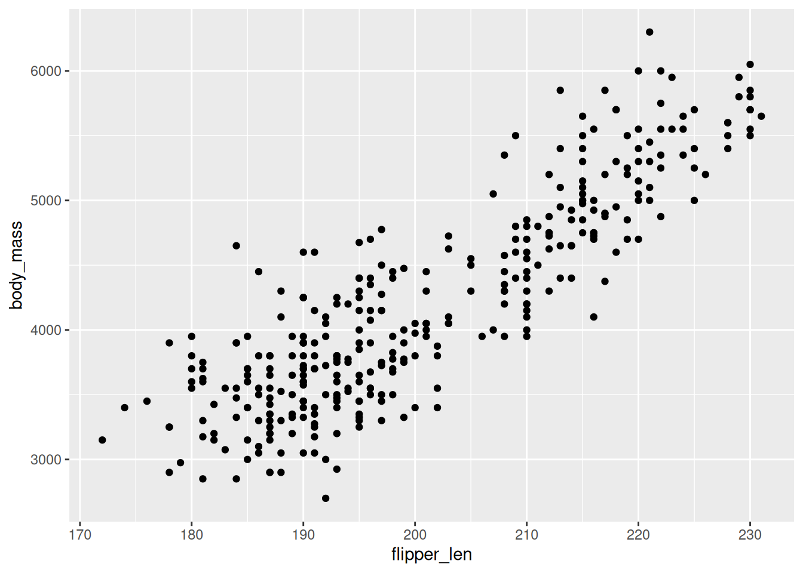
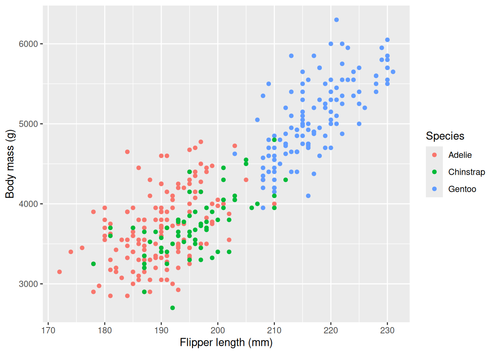
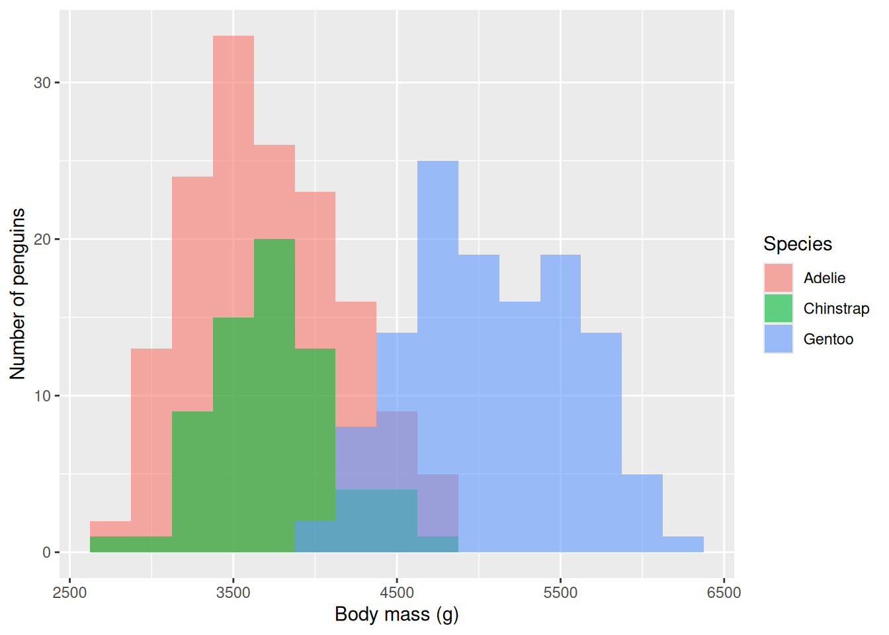
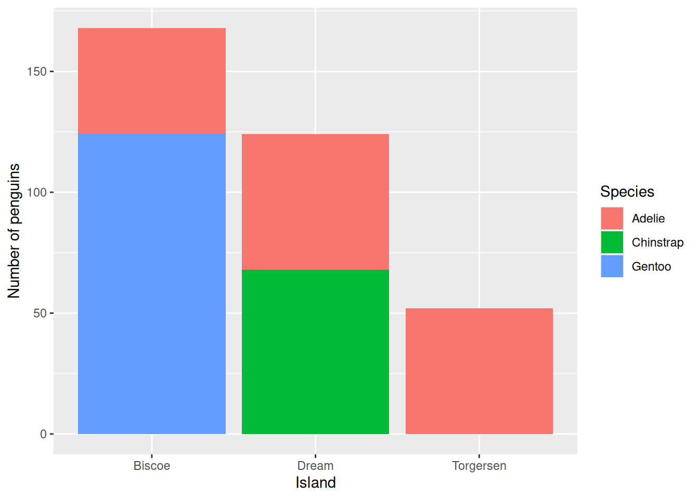

library(tidyverse)Wrangling and visualizing
Slide contents
Packages
Data wrangling

Data we get in the real world is usually messy. Once we have it in a tidy shape, there are only a few dplyr functions we need for most of our work.
Artwork by Allison Horst (CC BY 4.0).
The Palmer penguins
This dataset has 344 penguins of 3 different species, collected from 3 islands near Palmer Station, Antarctica. It’s been built into R since version 4.5. We’ll convert it into a tibble so it prints nicely.
penguins <- as_tibble(penguins)
penguins# A tibble: 344 × 8
species island bill_len bill_dep flipper_len body_mass sex year
<fct> <fct> <dbl> <dbl> <int> <int> <fct> <int>
1 Adelie Torgersen 39.1 18.7 181 3750 male 2007
2 Adelie Torgersen 39.5 17.4 186 3800 female 2007
3 Adelie Torgersen 40.3 18 195 3250 female 2007
4 Adelie Torgersen NA NA NA NA <NA> 2007
5 Adelie Torgersen 36.7 19.3 193 3450 female 2007
6 Adelie Torgersen 39.3 20.6 190 3650 male 2007
7 Adelie Torgersen 38.9 17.8 181 3625 female 2007
8 Adelie Torgersen 39.2 19.6 195 4675 male 2007
9 Adelie Torgersen 34.1 18.1 193 3475 <NA> 2007
10 Adelie Torgersen 42 20.2 190 4250 <NA> 2007
# ℹ 334 more rowsselect(): choose columns
select(penguins, species, bill_len, body_mass)# A tibble: 344 × 3
species bill_len body_mass
<fct> <dbl> <int>
1 Adelie 39.1 3750
2 Adelie 39.5 3800
3 Adelie 40.3 3250
4 Adelie NA NA
5 Adelie 36.7 3450
6 Adelie 39.3 3650
7 Adelie 38.9 3625
8 Adelie 39.2 4675
9 Adelie 34.1 3475
10 Adelie 42 4250
# ℹ 334 more rowsselect(penguins, starts_with("bill"))# A tibble: 344 × 2
bill_len bill_dep
<dbl> <dbl>
1 39.1 18.7
2 39.5 17.4
3 40.3 18
4 NA NA
5 36.7 19.3
6 39.3 20.6
7 38.9 17.8
8 39.2 19.6
9 34.1 18.1
10 42 20.2
# ℹ 334 more rowsfilter(): choose rows
filter(penguins, flipper_len > 190)# A tibble: 243 × 8
species island bill_len bill_dep flipper_len body_mass sex year
<fct> <fct> <dbl> <dbl> <int> <int> <fct> <int>
1 Adelie Torgersen 40.3 18 195 3250 female 2007
2 Adelie Torgersen 36.7 19.3 193 3450 female 2007
3 Adelie Torgersen 39.2 19.6 195 4675 male 2007
4 Adelie Torgersen 34.1 18.1 193 3475 <NA> 2007
5 Adelie Torgersen 38.6 21.2 191 3800 male 2007
6 Adelie Torgersen 34.6 21.1 198 4400 male 2007
7 Adelie Torgersen 38.7 19 195 3450 female 2007
8 Adelie Torgersen 42.5 20.7 197 4500 male 2007
9 Adelie Torgersen 46 21.5 194 4200 male 2007
10 Adelie Dream 36.4 17 195 3325 female 2007
# ℹ 233 more rowsfilter(penguins, flipper_len > 190 & species == "Chinstrap")# A tibble: 53 × 8
species island bill_len bill_dep flipper_len body_mass sex year
<fct> <fct> <dbl> <dbl> <int> <int> <fct> <int>
1 Chinstrap Dream 46.5 17.9 192 3500 female 2007
2 Chinstrap Dream 50 19.5 196 3900 male 2007
3 Chinstrap Dream 51.3 19.2 193 3650 male 2007
4 Chinstrap Dream 52.7 19.8 197 3725 male 2007
5 Chinstrap Dream 45.2 17.8 198 3950 female 2007
6 Chinstrap Dream 51.3 18.2 197 3750 male 2007
7 Chinstrap Dream 46 18.9 195 4150 female 2007
8 Chinstrap Dream 51.3 19.9 198 3700 male 2007
9 Chinstrap Dream 46.6 17.8 193 3800 female 2007
10 Chinstrap Dream 51.7 20.3 194 3775 male 2007
# ℹ 43 more rowsmutate(): add or change columns
Body mass is in grams, so let’s add a column with the mass in kilograms.
mutate(penguins, body_mass_kg = body_mass / 1000)# A tibble: 344 × 9
species island bill_len bill_dep flipper_len body_mass sex year
<fct> <fct> <dbl> <dbl> <int> <int> <fct> <int>
1 Adelie Torgersen 39.1 18.7 181 3750 male 2007
2 Adelie Torgersen 39.5 17.4 186 3800 female 2007
3 Adelie Torgersen 40.3 18 195 3250 female 2007
4 Adelie Torgersen NA NA NA NA <NA> 2007
5 Adelie Torgersen 36.7 19.3 193 3450 female 2007
6 Adelie Torgersen 39.3 20.6 190 3650 male 2007
7 Adelie Torgersen 38.9 17.8 181 3625 female 2007
8 Adelie Torgersen 39.2 19.6 195 4675 male 2007
9 Adelie Torgersen 34.1 18.1 193 3475 <NA> 2007
10 Adelie Torgersen 42 20.2 190 4250 <NA> 2007
# ℹ 334 more rows
# ℹ 1 more variable: body_mass_kg <dbl>mutate() gives back a new data frame and doesn’t change penguins. If we want to keep the result, we need to assign it (<-) to a variable.
Doing many steps at once
We can save each step as its own object,
penguins_1 <- mutate(penguins, body_mass_kg = body_mass / 1000)
penguins_2 <- filter(penguins_1, flipper_len > 190)
penguins_3 <- select(penguins_2, species, flipper_len, body_mass_kg)or we can nest the function calls, but then we have to read them from the inside out.
penguins_nested <- select(
filter(mutate(penguins, body_mass_kg = body_mass / 1000), flipper_len > 190),
species, flipper_len, body_mass_kg
)The pipe, |>
The pipe takes whatever is on its left and passes it in as the first argument of the function on its right. When you read code with pipes, you can say “and then” for each |>.
penguins |>
mutate(body_mass_kg = body_mass / 1000) |>
filter(flipper_len > 190) |>
select(species, flipper_len, body_mass_kg)# A tibble: 243 × 3
species flipper_len body_mass_kg
<fct> <int> <dbl>
1 Adelie 195 3.25
2 Adelie 193 3.45
3 Adelie 195 4.68
4 Adelie 193 3.48
5 Adelie 191 3.8
6 Adelie 198 4.4
7 Adelie 195 3.45
8 Adelie 197 4.5
9 Adelie 194 4.2
10 Adelie 195 3.32
# ℹ 233 more rowsgroup_by() and summarize()
group_by() splits the data into groups, and summarize() calculates a single value for each group.
penguins |>
group_by(species) |>
summarize(avg_body_mass = mean(body_mass, na.rm = TRUE))# A tibble: 3 × 2
species avg_body_mass
<fct> <dbl>
1 Adelie 3701.
2 Chinstrap 3733.
3 Gentoo 5076.We need na.rm = TRUE to skip over the missing values, otherwise a single NA makes the whole mean NA.
How many values are missing?
penguins |>
summarize(n = n(), missing_body_mass = sum(is.na(body_mass)))# A tibble: 1 × 2
n missing_body_mass
<int> <int>
1 344 2penguins |>
count(species, island)# A tibble: 5 × 3
species island n
<fct> <fct> <int>
1 Adelie Biscoe 44
2 Adelie Dream 56
3 Adelie Torgersen 52
4 Chinstrap Dream 68
5 Gentoo Biscoe 124Visualization: ask a question, then answer it

When we make a plot, we’re trying to answer a question about our data. A good plot answers that question clearly.
Artwork by Allison Horst (CC BY 4.0).
ggplot2: three parts
Every ggplot2 plot is built from the same parts:
- Aesthetic mappings, which map columns to visual properties (
x,y,colour,fill) - Geometric objects (geoms), which say how to draw them (
geom_point(),geom_histogram(),geom_bar()) - Scales and labels for the axes, colours, and titles
We add each layer, one at a time, with +.
Scatter plot: two quantitative variables
Is a penguin’s body mass related to its flipper length?
ggplot(penguins, aes(x = flipper_len, y = body_mass)) +
geom_point()
Add colour and labels
ggplot(penguins, aes(x = flipper_len, y = body_mass, colour = species)) +
geom_point() +
labs(
x = "Flipper length (mm)",
y = "Body mass (g)",
colour = "Species"
)
Histogram: one quantitative variable
ggplot(penguins, aes(x = body_mass, fill = species)) +
geom_histogram(binwidth = 250, alpha = 0.6, position = "identity") +
labs(x = "Body mass (g)", y = "Number of penguins", fill = "Species")
Bar plot: counts of a categorical variable
ggplot(penguins, aes(x = island, fill = species)) +
geom_bar() +
labs(x = "Island", y = "Number of penguins", fill = "Species")
Rules of thumb
- Answer one question per plot
- Label axes, with units
- Use colourblind-friendly palettes
- Avoid pie charts, 3D, and tables of numbers when a plot will do
Data and credits
penguins: R’sdatasets::penguins(R 4.5 or newer), Horst, Hill and Gorman’s Palmer penguins.- Adapted from chapters 3 and 4 of Data Science: A First Introduction (Timbers, Campbell and Lee; CC BY-NC-SA 4.0).